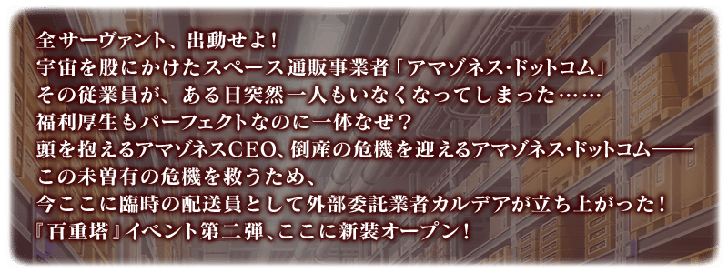
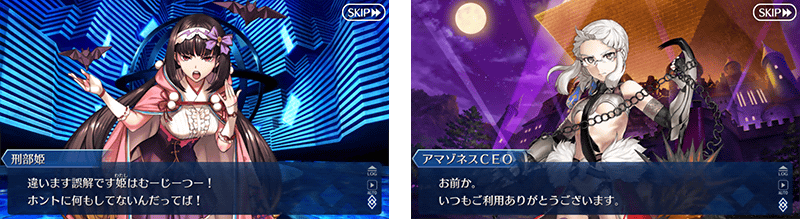

預定舉辦期間限定活動「拯救！ 亞馬遜.com ～CEO危機2020～」！攻略以從者總動員挑戰的「配送關卡」來重整攻略亞馬遜.com吧！
本活動中，攻略以從者總動員挑戰的亞馬遜.com配送關卡的話，能進行享受故事的主線關卡。
攻略配送關卡的關鍵是準備更多的從者！
強化更多的從者，在活動挑戰吧！
※本頁面皆為開發中圖片。會有與實際圖片相異的情況。
◆活動舉辦預定◆
2020年1月下旬
◆活動參加條件◆
滿足以下條件的御主才能參加
・通過「特異點F 炎上汙染都市 冬木」

為了記念期間限定活動「拯救！ 亞馬遜.com ～CEO危機2020～」舉辦，自2020年1月18日(六)在迦勒底之門內開放全種類每天出現的關卡「蒐集種火」與「修練場」。
利用這點強化更多的從者，預備「拯救！ 亞馬遜.com ～CEO危機20202020～」吧！
◆舉辦期間◆
2020年1月18日(六) 17:00(預定)～1月27日(一) 11:59
※關卡通過報酬的魔力稜鏡只限初次通過時才可獲得。 ※請注意由於以期間限定出現的「蒐集種火」及「修練場」與平常每日出現的「蒐集種火」及「修練場」的關卡不同，不會繼承「關卡情報」。 ※舉辦期間中，不會重置關卡通過報酬。
【全天開放的蒐集種火一覧】
| 關卡名 | 可做為戰利品獲得 的主要道具 |
攻略推薦 職階 |
|---|---|---|
| 【活動舉辦記念】 週一 蒐集種火<槍・殺篇> 初級、中級、上級、超級 |
Lancer、Assassin、Berserker的經驗值卡 |   |
| 【活動舉辦記念】 週二 蒐集種火<剣・騎篇> 初級、中級、上級、超級 |
Saber、Rider、Berserker的經驗值卡 |   |
| 【活動舉辦記念】 週三 蒐集種火<弓・術篇> 初級、中級、上級、超級 |
Archer、Caster、Berserker的經驗值卡 |   |
| 【活動舉辦記念】 週四 蒐集種火<槍・殺篇> 初級、中級、上級、超級 |
Lancer、Assassin、Berserker的經驗值卡 | |
| 【活動舉辦記念】 週五 蒐集種火<剣・騎篇> 初級、中級、上級、超級 |
Saber、Rider、Berserker的經驗值卡 | |
| 【活動舉辦記念】 週六 蒐集種火<弓・術篇> 初級、中級、上級、超級 |
Archer、Caster、Berserker的經驗值卡 | |
| 【活動舉辦記念】 週日 蒐集種火<隨機篇> 初級、中級、上級、超級 |
Saber、Archer、Lancer、Rider、Caster、Assassin、Berserker的經驗值卡(隨機) | - |
※Berserker在所有每日關卡皆為有效職階。
【全天開放的修練場一覧】
| 關卡名 | 可做為戰利品獲得 的主要道具 |
攻略推薦 職階 |
|---|---|---|
| 【活動舉辦記念】 週一 弓之修練場 初級、中級、上級、超級 |
Archer的靈基再臨用道具、Archer的技能強化素材道具 | |
| 【活動舉辦記念】 週二 槍之修練場 初級、中級、上級、超級 |
Lancer的靈基再臨用道具、Lancer的技能強化素材道具 | |
| 【活動舉辦記念】 週三 狂之修練場 初級、中級、上級、超級 |
Berserker的靈基再臨用道具、Berserker的技能強化素材道具 | ALL |
| 【活動舉辦記念】 週四 騎之修練場 初級、中級、上級、超級 |
Rider的靈基再臨用道具、Rider的技能強化素材道具 |  |
| 【活動舉辦記念】 週五 術之修練場 初級、中級、上級、超級 |
Caster的靈基再臨用道具、Caster的技能強化素材道具 | |
| 【活動舉辦記念】 週六 殺之修練場 初級、中級、上級、超級 |
Assassin的靈基再臨用道具、Assassin的技能強化素材道具 | |
| 【活動舉辦記念】 週日 劍之修練場 初級、中級、上級、超級 |
Saber的靈基再臨用道具、Saber的技能強化素材道具 | |
※Berserker在所有每日關卡皆為有效職階。